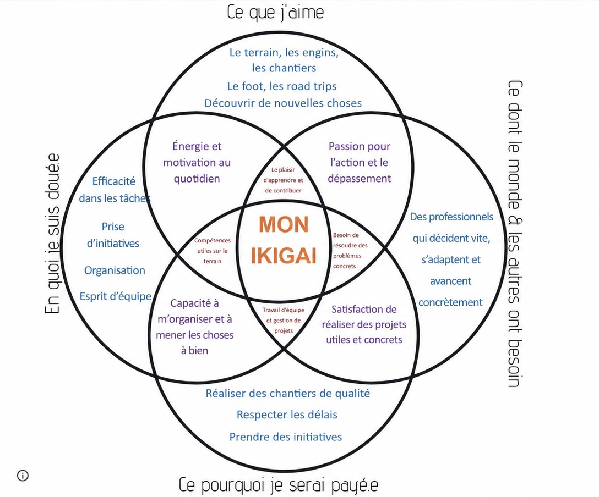

Étudiant en 2ème année à l'IUT Nancy-Brabois. Passionné par le terrain, les travaux publics et la conduite de chantier en VRD.
Passionné par le monde du bâtiment et des travaux publics depuis l'enfance, je suis convaincu que le génie civil est à la base de tout. Avant qu'un hôpital ouvre ses portes, avant que n'importe quel professionnel puisse exercer son métier, il faut que des techniciens aient construit les infrastructures, posé les réseaux, aménagé la voirie.
Mon parcours est atypique. Après une formation franco-allemande à l'ISFATES à Metz et un semestre en Erasmus au Luxembourg, j'ai fait le choix de rejoindre l'IUT Nancy-Brabois pour une formation plus technique et concrète, plus proche du terrain.
Depuis l'enfance, j'ai un maçon dans ma famille. J'ai très tôt mis la main à la pâte : béton, montage de murs, engins de chantier. Cette proximité avec le monde de la construction m'a donné le goût du concret.
Mon objectif : devenir conducteur de travaux en travaux publics, en commençant comme chef de chantier pour apprendre le terrain.
Obtention du baccalauréat général. Bases scientifiques solides pour une orientation vers le génie civil.
Deux ans en formation franco-allemande avec une dimension internationale. Visite d'ArcelorMittal à Esch-sur-Alzette et chantiers TP aux alentours de Metz. Prise de conscience que je souhaitais un cursus plus technique et ancré dans la pratique du terrain.
Formation en dimensionnement, topographie, voirie, réseaux, assainissement, organisation de chantier, AutoCAD, Revit, Mensura. Stage chez Visconti TP en 2ème année.
Poursuite en alternance pour la 3ème année du BUT. Développement des compétences d'encadrement et de gestion de chantier en conditions réelles.
Organisé, extraverti et à l'écoute des autres, je crée naturellement de la cohésion dans les équipes. Mon sens pratique et mon goût pour la responsabilité sont des atouts sur le chantier.
Le point d'équilibre entre ce que j'aime, ce en quoi je suis doué, ce dont le monde a besoin et ce pour quoi je peux être rémunéré.

Travail en appui direct du chef de chantier sur plusieurs chantiers d'assainissement, AEP et voirie en Moselle Est. Suivi des phases de terrassement, pose de canalisations, raccordements et remise en état de voirie. Participation aux réunions de chantier et lecture de plans sur le terrain.
Montage de murs, coffrage, ferraillage, coulage de poutres, poteaux et dalles. Utilisation d'engins de chantier (mini-pelle, télescopique). Compréhension concrète de l'organisation d'un chantier et des méthodes du gros œuvre.
Visite du site industriel ArcelorMittal à Esch-sur-Alzette et de chantiers de travaux publics dans la région de Metz. Ouverture à la dimension internationale du secteur.
Rabotage, préparation, reprise de bordures, enrobés, réouverture.
Rabotage, ajustement bordures existantes, enrobés, réouverture.
Rabotage + enrobés dans la même journée.
Offre sélectionnée — Visconti TP
Le métier de chef de chantier, c'est un métier d'action et de responsabilité. Ce qui m'attire : la diversité des journées, coordonner les équipes, résoudre un imprévu et voir avancer le chantier.
Visconti TP est une PME à taille humaine où on apprend vite et où on a de vraies responsabilités. L'ambiance de travail m'a convaincu lors de mon stage. Réactivité, esprit d'équipe et engagement environnemental sont des valeurs que je partage.
La finalité me motive : contribuer concrètement à la qualité de vie des habitants de ma région en construisant des infrastructures utiles.
| Compétence | Comment acquise | Niveau |
|---|---|---|
| Phasage & organisation | SAÉ MGM — Aire A31 | ✅ Acquis |
| Travaux VRD terrain | Stage Visconti TP | ✅ Acquis |
| Utilisation d'engins | 4 ans maçonnerie | ✅ Acquis |
| Lecture de plans | BUT — AutoCAD / Revit | 🔵 En cours |
| Encadrement d'équipe | Stage + alternance | 🔵 En cours |
| Sécurité chantier | BUT + stage | 🔵 En cours |